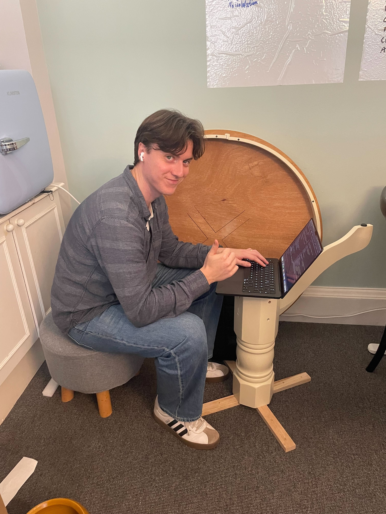

Daniel Stenson
Engineer, based in Sweden. Founding engineer at Paraglide AI.
work
- Jul 2025 – present Founding engineer · Paraglide AI
- Jan 2024 – Sep 2025 Investor · byFounders (early-stage VC)
- Aug 2023 – Jan 2024 Data engineer · Accenture
projects
I build things on the side. Most recently Daston, a visual design companion for terminal coding agents like Claude Code — edit fonts, colors, and components on a canvas, hand the changes back as prompts. Before that, Tailend, a recruiting platform for robotics teleoperators where candidates apply by controlling a simulated robot in the browser (Next.js, MuJoCo). Last year I spent time on Labpal with friends from CERN and Lund — an early attempt at autonomous research, roughly in the direction Karpathy recently described (but a year in advance). It turned raw data into a complete Jupyter notebook in under three minutes.
study
M.Sc. in Industrial Engineering & Management, Lund University — five-year program with a specialization in applied mathematics.
Research with the Department of Computer Science under Pierre Nuguès on models for predicting outcomes of heart and lung transplantations. Published in IEEE Xplore.
earlier
Between 14 and 18, I did graphic design on YouTube (network partnership at ~1k subscribers, a few design contest wins) and later ran an Amazon FBA company (CDS Enterprise) selling office supplies in the US — around $20k in revenue.
writing
- Dec 2024 A Path Toward Physical Intelligence: Seeing AI’s Full Potential · byFounders
elsewhere
